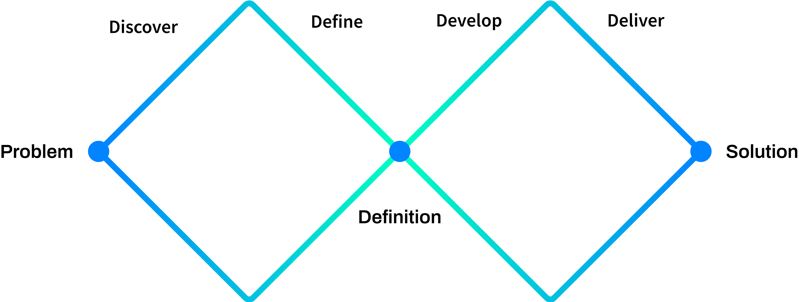
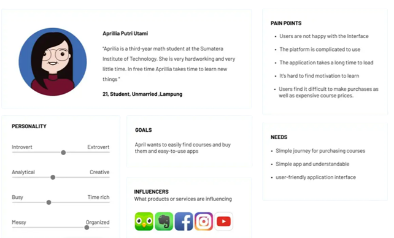
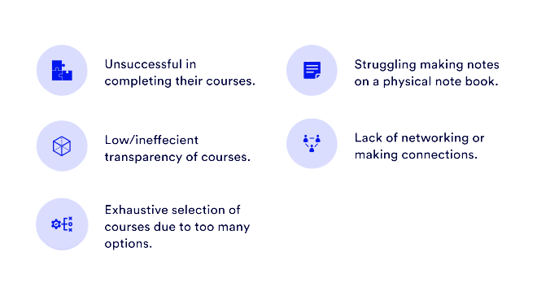
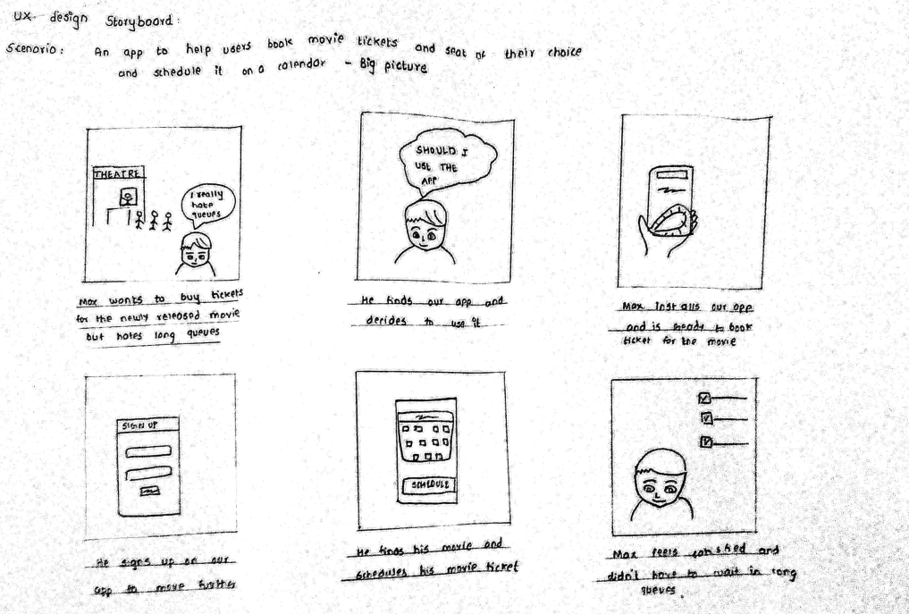
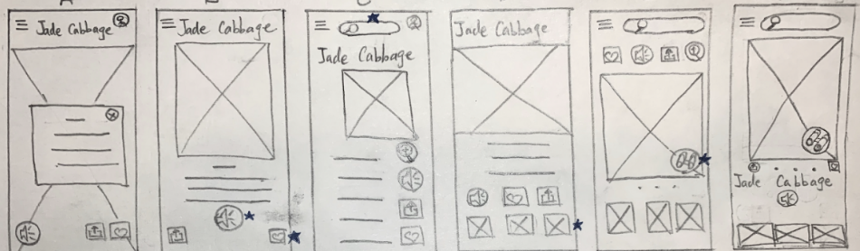
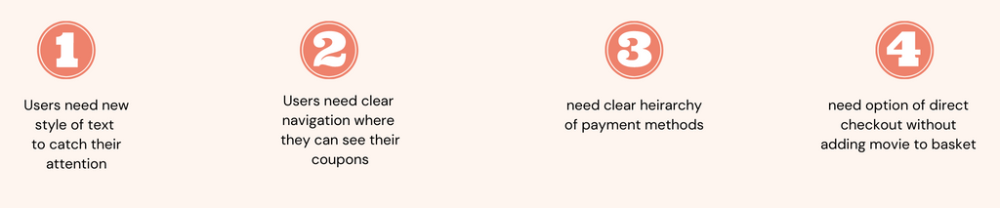
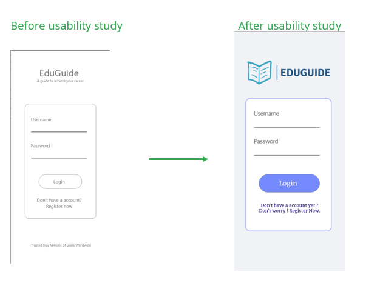

Project Overview
Screenz is an realtime movie seat booking app. It is design to keep user comfort in mind.To save users time standing in long queues and to book seats according to their choice. Discounts are great too.
My role and responsibilities:
I was responsible for designing EduGuide app from conception to delivery with the tasks like Ux research, Empathize, Ideation, Usability studies, Wireframing, design of high fidelity, Prototyping, and accountability for accessibility
The Problem
Many of the students do not have access to quality education to educate them and make them future of tomorrow we need to design an app where students all over world can learn from
The Process:
Design Thinking Framework
During the project, I had followed the design thinking framework. It is a way to create a user-centered approach to problem-solving. It helps to address a real user problem, which is functional and affordable. There are five phases in the process.
1.Empathize
2.Define
3.Ideate
4.Prototype
5.Test
Each phase of the framework answers a specific question. The framework continues after initial Low fidelity designs for further iterations and high fidelity design to make them more user-centered.
Emphatize and Define
Problem Statement:
Aprilla is an student who needs an way to learn new technologies because she do not have access to education
User Story:
As a student who do not have access to education it would be great if there was a free online learning platform where i can gain new skills and find a job
Pain Points:
Ideation
The ideation process is a journey towards the brainstorming of possible solutions. It consists of competitive analysis, competitive reports, Crazy 8 exercise, storyboarding, user flow, and Information Architecture of an app.
Competitive Analysis
The goal of the analysis was to compare user experience and features of competitor’s websites. Four competitors have been analyzing, as a part of the competitive analysis. Among them, 3 were direct competitors (Udemy,Udacity,Coursera) and were indirect competitors(Youtube,GreatLearning).The complete competitive analysis can be view here.
Ideation Exercises on Paper
Wireframe Ideation
I had ideated some designs for the home screen on paper. From them, I had chosen the best-suited sections and finalized sections for the home screen. It is fun when your mind is flourishing with ideas, and you crave to explore them more
Digital Wireframe


Usability Study
An initial wireframe is tested with potential users by a usability study. It was conducted remotely in India. The usability study revealed some valuable insights, and it made me understand how minute details can change the user’s perspective! The process and details related to the usability study are present below.
Derivatives from Usability Study

Insights
Before and After Usability Study
Mock Up Screens
After few iterations for low fidelity wireframes and usability research, come up with polished high fidelity designs. Some of the design screens are present here. Can check out all design screens from an embedded window.


Prototype
A prototype of high fidelity mockup with interactions can be view by the link below.
Takeaways
During the course of the project, I had learned so many new things and processes in detail. It is my first project, and I had enjoyed it thoroughly. Empathizing with users differently without any biases and guidance is very important to get good outcomes from the research. I had also learned the importance of the users’ thought processes. It can change from user to user. How minor things and details can change conception from the user’s point of view! It is also necessary that you come up with equitable and inclusive solutions. For this project, iteration is a continuous process. Also, usability study should be at every stage of the design, which helps to understand users and pain points. It also helps you in up to date with trends in the market
Next Steps
1. Conduct usability studies to make sure that solutions address the pain points of users.
2. Design and iterate on group bookings for corporates and personals.
3. Do more research to find new needs of users and find the scope of improvements.